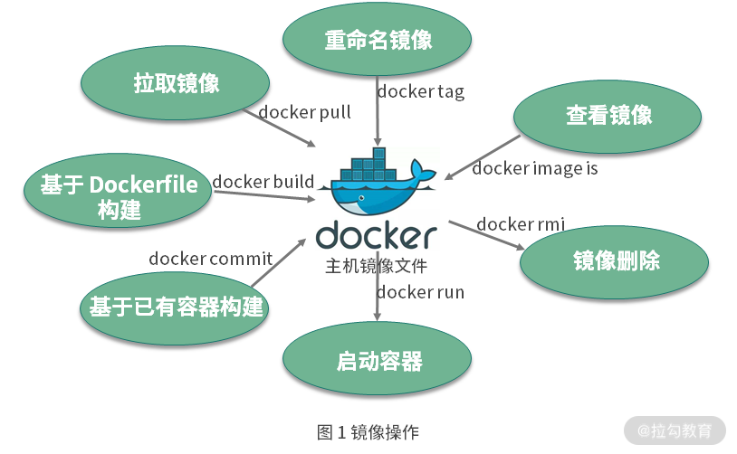
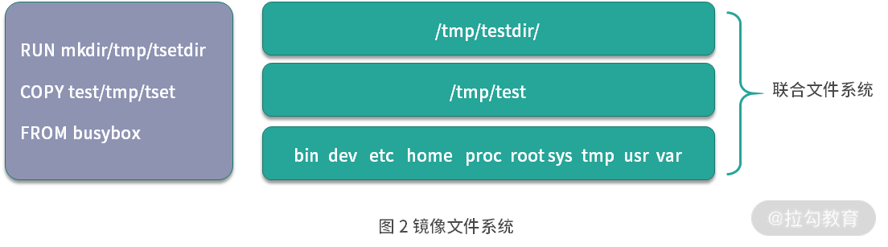

- 00 溯本求源，吃透 Docker！.md.html
- 01 Docker 安装：入门案例带你了解容器技术原理.md.html
- 02 核心概念：镜像、容器、仓库，彻底掌握 Docker 架构核心设计理念.md.html
- 03 镜像使用：Docker 环境下如何配置你的镜像？.md.html
- 04 容器操作：得心应手掌握 Docker 容器基本操作.md.html
- 05 仓库访问：怎样搭建属于你的私有仓库？.md.html
- 06 最佳实践：如何在生产中编写最优 Dockerfile？.md.html
- 07 Docker 安全：基于内核的弱隔离系统如何保障安全性？.md.html
- 08 容器监控：容器监控原理及 cAdvisor 的安装与使用.md.html
- 09 资源隔离：为什么构建容器需要 Namespace ？.md.html
- 10 资源限制：如何通过 Cgroups 机制实现资源限制？.md.html
- 11 组件组成：剖析 Docker 组件作用及其底层工作原理.md.html
- 12 网络模型：剖析 Docker 网络实现及 Libnetwork 底层原理.md.html
- 13 数据存储：剖析 Docker 卷与持久化数据存储的底层原理.md.html
- 14 文件存储驱动：AUFS 文件系统原理及生产环境的最佳配置.md.html
- 15 文件存储驱动：Devicemapper 文件系统原理及生产环境的最佳配置.md.html
- 16 文件存储驱动：OverlayFS 文件系统原理及生产环境的最佳配置.md.html
- 17 原理实践：自己动手使用 Golang 开发 Docker（上）.md.html
- 18 原理实践：自己动手使用 Golang 开发 Docker（下）.md.html
- 19 如何使用 Docker Compose 解决开发环境的依赖？.md.html
- 20 如何在生产环境中使用 Docker Swarm 调度容器？.md.html
- 21 如何使 Docker 和 Kubernetes 结合发挥容器的最大价值？.md.html
- 22 多阶级构建：Docker 下如何实现镜像多阶级构建？.md.html
- 23 DevOps：容器化后如何通过 DevOps 提高协作效能？.md.html
- 24 CICD：容器化后如何实现持续集成与交付？（上）.md.html
- 25 CICD：容器化后如何实现持续集成与交付？（下）.md.html
- 26 结束语 展望未来：Docker 的称霸之路.md.html
- 捐赠
03 镜像使用：Docker 环境下如何配置你的镜像？
今天我将围绕 Docker 核心概念镜像展开，首先重点讲解一下镜像的基本操作，然后介绍一下镜像的实现原理。首先说明，咱们本课时的镜像均指 Docker 镜像。
你是否还记得镜像是什么？我们先回顾一下。
镜像是一个只读的 Docker 容器模板，包含启动容器所需要的所有文件系统结构和内容。简单来讲，镜像是一个特殊的文件系统，它提供了容器运行时所需的程序、软件库、资源、配置等静态数据。即镜像不包含任何动态数据，镜像内容在构建后不会被改变。
然后我们来看下如何操作镜像。
镜像操作

图 1 镜像操作
从图中可知，镜像的操作可分为：
- 拉取镜像，使用
docker pull命令拉取远程仓库的镜像到本地 ； - 重命名镜像，使用
docker tag命令“重命名”镜像 ； - 查看镜像，使用
docker image ls或docker images命令查看本地已经存在的镜像 ； - 删除镜像，使用
docker rmi命令删除无用镜像 ； - 构建镜像，构建镜像有两种方式。第一种方式是使用
docker build命令基于 Dockerfile 构建镜像，也是我比较推荐的镜像构建方式；第二种方式是使用docker commit命令基于已经运行的容器提交为镜像。
下面，我们逐一详细介绍。
拉取镜像
Docker 镜像的拉取使用docker pull命令， 命令格式一般为 docker pull [Registry]/[Repository]/[Image]:[Tag]。
- Registry 为注册服务器，Docker 默认会从 docker.io 拉取镜像，如果你有自己的镜像仓库，可以把 Registry 替换为自己的注册服务器。
- Repository 为镜像仓库，通常把一组相关联的镜像归为一个镜像仓库，
library为 Docker 默认的镜像仓库。 - Image 为镜像名称。
- Tag 为镜像的标签，如果你不指定拉取镜像的标签，默认为
latest。
例如，我们需要获取一个 busybox 镜像，可以执行以下命令：
busybox 是一个集成了数百个 Linux 命令（例如 curl、grep、mount、telnet 等）的精简工具箱，只有几兆大小，被誉为 Linux 系统的瑞士军刀。我经常会使用 busybox 做调试来查找生产环境中遇到的问题。
$ docker pull busybox
Using default tag: latest
latest: Pulling from library/busybox
61c5ed1cbdf8: Pull complete
Digest: sha256:4f47c01fa91355af2865ac10fef5bf6ec9c7f42ad2321377c21e844427972977
Status: Downloaded newer image for busybox:latest
docker.io/library/busybox:latest
实际上执行docker pull busybox命令，都是先从本地搜索，如果本地搜索不到busybox镜像则从 Docker Hub 下载镜像。
拉取完镜像，如果你想查看镜像，应该怎么操作呢？
查看镜像
Docker 镜像查看使用docker images或者docker image ls命令。
下面我们使用docker images命令列出本地所有的镜像。
$ docker images
REPOSITORY TAG IMAGE ID CREATED SIZE
nginx latest 4bb46517cac3 9 days ago 133MB
nginx 1.15 53f3fd8007f7 15 months ago 109MB
busybox latest 018c9d7b792b 3 weeks ago 1.22MB
如果我们想要查询指定的镜像，可以使用docker image ls命令来查询。
$ docker image ls busybox
REPOSITORY TAG IMAGE ID CREATED SIZE
busybox latest 018c9d7b792b 3 weeks ago 1.22MB
当然你也可以使用docker images命令列出所有镜像，然后使用grep命令进行过滤。使用方法如下：
$ docker images |grep busybox
busybox latest 018c9d7b792b 3 weeks ago 1.22MB
“重命名”镜像
如果你想要自定义镜像名称或者推送镜像到其他镜像仓库，你可以使用docker tag命令将镜像重命名。docker tag的命令格式为 docker tag [SOURCE_IMAGE][:TAG] [TARGET_IMAGE][:TAG]。
下面我们通过实例演示一下：
$ docker tag busybox:latest mybusybox:latest
执行完docker tag命令后，可以使用查询镜像命令查看一下镜像列表：
docker images
REPOSITORY TAG IMAGE ID CREATED SIZE
busybox latest 018c9d7b792b 3 weeks ago 1.22MB
mybusybox latest 018c9d7b792b 3 weeks ago 1.22MB
可以看到，镜像列表中多了一个mybusybox的镜像。但细心的同学可能已经发现，busybox和mybusybox这两个镜像的 IMAGE ID 是完全一样的。为什么呢？实际上它们指向了同一个镜像文件，只是别名不同而已。
如果我不需要mybusybox镜像了，想删除它，应该怎么操作呢？
删除镜像
你可以使用docker rmi或者docker image rm命令删除镜像。
举例：你可以使用以下命令删除mybusybox镜像。
$ docker rmi mybusybox
Untagged: mybusybox:latest
此时，再次使用docker images命令查看一下我们机器上的镜像列表。
$ docker images
REPOSITORY TAG IMAGE ID CREATED SIZE
busybox latest 018c9d7b792b 3 weeks ago 1.22MB
通过上面的输出，我们可以看到，mybusybox镜像已经被删除。
如果你想构建属于自己的镜像，应该怎么做呢？
构建镜像
构建镜像主要有两种方式：
- 使用
docker commit命令从运行中的容器提交为镜像； - 使用
docker build命令从 Dockerfile 构建镜像。
首先介绍下如何从运行中的容器提交为镜像。我依旧使用 busybox 镜像举例，使用以下命令创建一个名为 busybox 的容器并进入 busybox 容器。
$ docker run --rm --name=busybox -it busybox sh
/ #
执行完上面的命令后，当前窗口会启动一个 busybox 容器并且进入容器中。在容器中，执行以下命令创建一个文件并写入内容：
/ # touch hello.txt && echo "I love Docker. " > hello.txt
/ #
此时在容器的根目录下，已经创建了一个 hello.txt 文件，并写入了 “I love Docker. “。下面，我们新打开另一个命令行窗口，运行以下命令提交镜像：
$ docker commit busybox busybox:hello
sha256:cbc6406aaef080d1dd3087d4ea1e6c6c9915ee0ee0f5dd9e0a90b03e2215e81c
然后使用上面讲到的docker image ls命令查看镜像：
$ docker image ls busybox
REPOSITORY TAG IMAGE ID CREATED SIZE
busybox hello cbc6406aaef0 2 minutes ago 1.22MB
busybox latest 018c9d7b792b 4 weeks ago 1.22MB
此时我们可以看到主机上新生成了 busybox:hello 这个镜像。
第二种方式是最重要也是最常用的镜像构建方式：Dockerfile。Dockerfile 是一个包含了用户所有构建命令的文本。通过docker build命令可以从 Dockerfile 生成镜像。
使用 Dockerfile 构建镜像具有以下特性：
- Dockerfile 的每一行命令都会生成一个独立的镜像层，并且拥有唯一的 ID；
- Dockerfile 的命令是完全透明的，通过查看 Dockerfile 的内容，就可以知道镜像是如何一步步构建的；
- Dockerfile 是纯文本的，方便跟随代码一起存放在代码仓库并做版本管理。
看到使用 Dockerfile 的方式构建镜像有这么多好的特性，你是不是已经迫不及待想知道如何使用了。别着急，我们先学习下 Dockerfile 常用的指令。
| Dockerfile 指令 | 指令简介 |
|---|---|
| FROM | Dockerfile 除了注释第一行必须是 FROM ，FROM 后面跟镜像名称，代表我们要基于哪个基础镜像构建我们的容器。 |
| RUN | RUN 后面跟一个具体的命令，类似于 Linux 命令行执行命令。 |
| ADD | 拷贝本机文件或者远程文件到镜像内 |
| COPY | 拷贝本机文件到镜像内 |
| USER | 指定容器启动的用户 |
| ENTRYPOINT | 容器的启动命令 |
| CMD | CMD 为 ENTRYPOINT 指令提供默认参数，也可以单独使用 CMD 指定容器启动参数 |
| ENV | 指定容器运行时的环境变量，格式为 key=value |
| ARG | 定义外部变量，构建镜像时可以使用 build-arg = 的格式传递参数用于构建 |
| EXPOSE | 指定容器监听的端口，格式为 [port]/tcp 或者 [port]/udp |
| WORKDIR | 为 Dockerfile 中跟在其后的所有 RUN、CMD、ENTRYPOINT、COPY 和 ADD 命令设置工作目录。 |
看了这么多指令，感觉有点懵？别担心，我通过一个实例让你来熟悉它们。这是一个 Dockerfile：
FROM centos:7
COPY nginx.repo /etc/yum.repos.d/nginx.repo
RUN yum install -y nginx
EXPOSE 80
ENV HOST=mynginx
CMD ["nginx","-g","daemon off;"]
好，我来逐行分析一下上述的 Dockerfile。
- 第一行表示我要基于 centos:7 这个镜像来构建自定义镜像。这里需要注意，每个 Dockerfile 的第一行除了注释都必须以 FROM 开头。
- 第二行表示拷贝本地文件 nginx.repo 文件到容器内的 /etc/yum.repos.d 目录下。这里拷贝 nginx.repo 文件是为了添加 nginx 的安装源。
- 第三行表示在容器内运行
yum install -y nginx命令，安装 nginx 服务到容器内，执行完第三行命令，容器内的 nginx 已经安装完成。 - 第四行声明容器内业务（nginx）使用 80 端口对外提供服务。
- 第五行定义容器启动时的环境变量 HOST=mynginx，容器启动后可以获取到环境变量 HOST 的值为 mynginx。
- 第六行定义容器的启动命令，命令格式为 json 数组。这里设置了容器的启动命令为 nginx ，并且添加了 nginx 的启动参数 -g ‘daemon off;’ ，使得 nginx 以前台的方式启动。
上面这个 Dockerfile 的例子基本涵盖了常用的镜像构建指令，代码我已经放在 GitHub上，如果你感兴趣可以到 GitHub 下载源码并尝试构建这个镜像。
学习了镜像的各种操作，下面我们深入了解一下镜像的实现原理。
镜像的实现原理
其实 Docker 镜像是由一系列镜像层（layer）组成的，每一层代表了镜像构建过程中的一次提交。下面以一个镜像构建的 Dockerfile 来说明镜像是如何分层的。
FROM busybox
COPY test /tmp/test
RUN mkdir /tmp/testdir
上面的 Dockerfile 由三步组成：
第一行基于 busybox 创建一个镜像层；
第二行拷贝本机 test 文件到镜像内；
第三行在 /test 文件夹下创建一个目录 testdir。
为了验证镜像的存储结构，我们使用docker build命令在上面 Dockerfile 所在目录构建一个镜像：
$ docker build -t mybusybox .
这里我的 Docker 使用的是 overlay2 文件驱动，进入到/var/lib/docker/overlay2目录下使用tree .命令查看产生的镜像文件：
$ tree .
# 以下为 tree . 命令输出内容
|-- 3e89b959f921227acab94f5ab4524252ae0a829ff8a3687178e3aca56d605679
| |-- diff # 这一层为基础层，对应上述 Dockerfile 第一行，包含 busybox 镜像所有文件内容，例如 /etc,/bin,/var 等目录
... 此次省略部分原始镜像文件内容
| `-- link
|-- 6591d4e47eb2488e6297a0a07a2439f550cdb22845b6d2ddb1be2466ae7a9391
| |-- diff # 这一层对应上述 Dockerfile 第二行，拷贝 test 文件到 /tmp 文件夹下，因此 diff 文件夹下有了 /tmp/test 文件
| | `-- tmp
| | `-- test
| |-- link
| |-- lower
| `-- work
|-- backingFsBlockDev
|-- bec6a018080f7b808565728dee8447b9e86b3093b16ad5e6a1ac3976528a8bb1
| |-- diff # 这一层对应上述 Dockerfile 第三行，在 /tmp 文件夹下创建 testdir 文件夹，因此 diff 文件夹下有了 /tmp/testdir 文件夹
| | `-- tmp
| | `-- testdir
| |-- link
| |-- lower
| `-- work
...
通过上面的目录结构可以看到，Dockerfile 的每一行命令，都生成了一个镜像层，每一层的 diff 夹下只存放了增量数据，如图 2 所示。

图 2 镜像文件系统
分层的结构使得 Docker 镜像非常轻量，每一层根据镜像的内容都有一个唯一的 ID 值，当不同的镜像之间有相同的镜像层时，便可以实现不同的镜像之间共享镜像层的效果。
总结一下， Docker 镜像是静态的分层管理的文件组合，镜像底层的实现依赖于联合文件系统（UnionFS）。充分掌握镜像的原理，可以帮助我们在生产实践中构建出最优的镜像，同时也可以帮助我们更好地理解容器和镜像的关系。
总结
到此，相信你已经对 Docker 镜像这一核心概念有了较深的了解，并熟悉了 Docker 镜像的常用操作（拉取、查看、“重命名”、删除和构建自定义镜像）及底层实现原理。
本课时内容精华，我帮你总结如下：
镜像操作命令：
- 拉取镜像，使用 docker pull 命令拉取远程仓库的镜像到本地 ；
- 重命名镜像，使用 docker tag 命令“重命名”镜像 ；
- 查看镜像，使用 docker image ls 或 docker images 命令查看本地已经存在的镜像；
- 删除镜像，使用 docker rmi 命令删除无用镜像 ；
- 构建镜像，构建镜像有两种方式。第一种方式是使用 docker build 命令基于 Dockerfile 构建镜像，也是我比较推荐的镜像构建方式；第二种方式是使用 docker commit 命令基于已经运行的容器提交为镜像。
镜像的实现原理： 镜像是由一系列的镜像层（layer ）组成，每一层代表了镜像构建过程中的一次提交，当我们需要修改镜像内的某个文件时，只需要在当前镜像层的基础上新建一个镜像层，并且只存放修改过的文件内容。分层结构使得镜像间共享镜像层变得非常简单和方便。
最后试想下，如果有一天我们机器存储空间不足，那你知道使用什么命令可以清理本地无用的镜像和容器文件吗？思考后，可以把你的想法写在留言区。
© 2019 - 2023 Liangliang Lee. Powered by gin and hexo-theme-book.